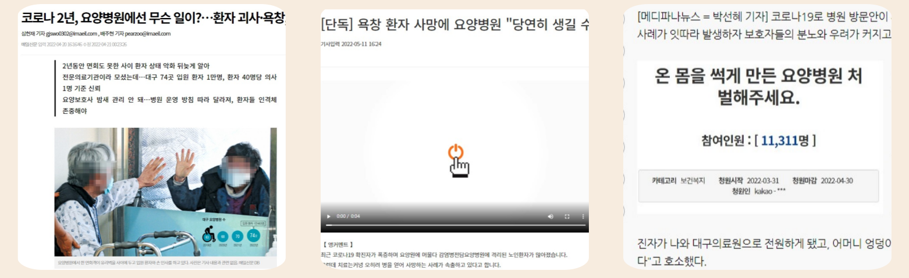
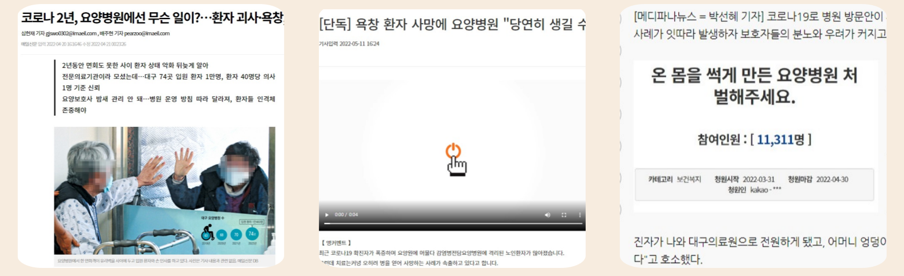
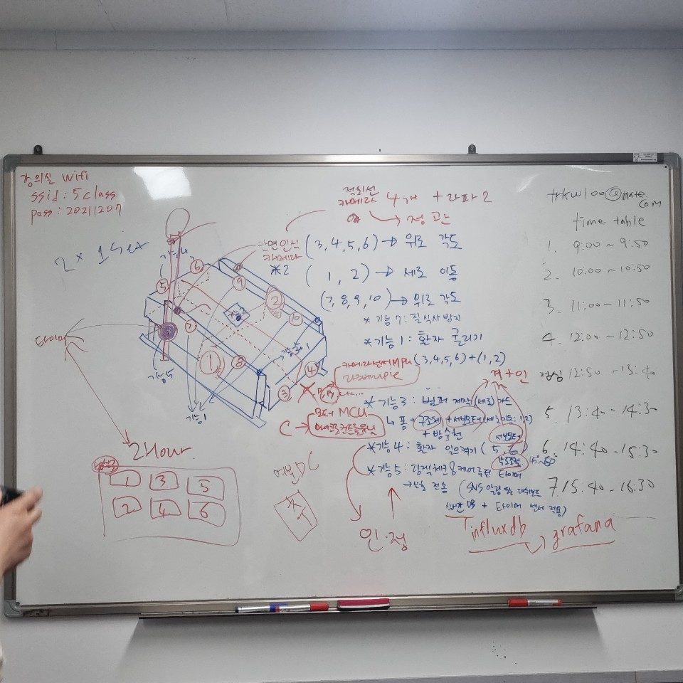

🤔 아이디어 구상, 모형/구조 스케치
처음에 아이디어가 너무 안나와서 고생했었지. 이러다가 못 정할 수도 있겠다는 생각까지 들었어.
브레인스토밍이며 회의며 몇번을 했는지..! 정말 아이디어 정하는게 이렇게 어려운 일인지 처음 알았던것 같아. 주제는 잡혀있는데 제한적이기까지 하니까말이야. 재난을 분석해야하고 사물인터넷 위주이거나 인공지능, 배운 기술 활용 가능할 것 등등 고려할 게 많으니까 더 정하기 힘들었던것 같아.
그렇게 우여곡절을 겪고 정하게 된 아이디어는 스마트 요양침대로 헬스케어 분야였어. 그라파나 대시보드를 너무 써보고싶은데, 국내 적용 사례가 적은데도 찾아보니까 있더라고! 🤩 그라파나 대시보드를 대기업 산하 병원에서 시스템에 적용하고 있다는 이야기를 듣게 된거야. 그래서 헬스케어 쪽으로 방향을 잡고 더 심도있게 회의를 하다가 DX 스마트침대랑 시스템을 생각하게 된거지.

논문도 리뷰논문부터 압력 분산 등등 초점이 각기다른 것들로 수집해서 각자 읽어보고 정리해오고, 뉴스기사랑 학술검색 같은걸로 사례조사도 열심히 해봤지. 위에 논문정리는 인애가 해온 건데, 정말 잘해온것 같아! 인애는 정리랑 분석을 참 잘해. 디테일한 것도 신경쓰는 세심함이 있는 친구고. 아무튼 이 아래는 그렇게 해서 찾은 기사와 논문들이야.
 

▶ 인터뷰(☎) : 박지웅 / 보라매병원 성형외과 교수
- "(욕창은) 관리하고 예방하는 게 중요하긴 해요. 한 번 생기면 치료하기 힘들어요. 원칙적으로는 2시간에 한번씩 체위를 변경해주라고 하거든요. 체계적인 관리 프로토콜이 필요하긴해요. 안알려져서 그렇지 되게 많아요. 질적 관리를 할 수 있는 방안을…."
2025년 초고령사회 진입을 앞둔 상황에서 요양병원의 ‘반 인륜적인 의료사고’ 방지대책과 함께 체계적인 환자관리 시스템 마련이 시급해보입니다.
매일경제TV 양미정입니다. [mkcertain@mk.co.kr]
영상 : 최연훈 기자 [mkcyhmk.co.kr]
가장 눈에 띈 것은 극단적인 사례로 이슈가 된 요양병원이였어. 욕창때문에 사망까지도 가는데, 예방말고는 치료나 수술이 효과가 없구나! 그럼 예방하는 시스템을 개발하면 되지 않을까? 🙄🤔🤔 그러면서 고령 환자나 움직일 수 없는 여건의 환자들은 수시로 뒤집어줘야한다는 것도 경민이의 가족분들께 직접 전해듣게 되면서 서서히 방향성을 잡기 시작했어.
그리고 선생님이 기본적으로 써야할 기술과 구조등을 간단히 잡아주셔서, 거기에 살을 붙이듯이 우리가 활용할 기술들을 구체적으로 넣어가면서 아이디어를 짰던 것 같아.
구상도가 나오기까지 정리 또 정리
처음에는 기획한대로 쭉 작업만하면 다 될 줄 알았는데 그건 경기도 오산이였지...
아이디어 정하고 - 개발할 모듈 정하고 - 그 모듈에서 또 어떤 기능을 얼만큼 구현할건지, - 무슨 부품을 쓸지, - 부품과 모듈개발 환경은 호환되는지 - 개발환경 구축할 때 프로그램들 끼리 버전 호환은 되는지 - 된다면 얼마나 공부해야하는지....
끝이 없었어. 서버에 쓰는 프레임워크는 왜그렇게 많은지!! 데이터베이스는 다 문법도 비슷한데 왜 이름은 다 다른지! 대시보드에 연동을 테스트해보고싶은데 대시보드는 왜 도커에 안깔리는지 등등 우여곡절이 너무너무너무 많았어.

처음 만든 순서도는 나름 잘 만들었다고 생각했지만, 규칙에도 맞지않았고 순서도 작성법도 잘 몰랐어. 그리고 가면갈 수록 한계가 드러나고 빠지고 추가하는 것들이 많아져서 수정을 해야만했지.
그리고 구성도도 그래! 구성도에 Yolov3를 쓰려고 적었는데, 나중에보니까 v5가 더 쓰기 좋다고 하더라고...😓😓😓 모터제어도 atmaga328 써서 DC, 서보 둘다 제어해야지~하고 맘놓고있다가 갑자기 서보모터로 모두 전환하고 모터모듈로 제어하게되니까 Uart통신 해둔것도 쓸모가 없어져버렸어. 그래도 경험이니까!
거의 마지막에 수정된 구성도에서는 프로토타입 침대 하나가 줄어들었어. 라즈베리파이를 더 쓸수도 없거니와 서보모터가 비싸서 지원예산을 초과하는바람에, 프레임만 달랑 남았거든. 그리고 애저클라우드에는 flask웹프레임워크 서버를 깔았는데 아예 오류가 나서 아무것도 안되더라고.. 뭔가 우리가 잘못한게 있겠지? 아니면 수맥이 흐른다거나... 기도메타도 먹질 않으니까 그냥 저장소로 쓰기로 했어. 사실 os가 윈도우가 아니였더라면 클라우드보다 도커를 쓰는게 효율적이였을 텐데, 도커는 필수기술이 아니고 클라우드가 필수기술인 과정으로 설계되는 바람에 우린 클라우드를 선택했고, 그게 잘 안된거지. 그래도 리눅스pc를 부팅해서 웹서버랑 그라파나, db어드민을 구축하고 웹서버 내에서는 여러가지 동작이 가능하도록 했어. 웹앱을 제작하기 좋은 flask는 개인프로젝트로 써보는걸로 하고 apache2를 사용했지. 라즈베리파이도 1번침대 하나에 올인해서 2개나 들어갔어. 전압이 딸렸거든...🤧

문서화의 초반에서 중반까지.
간트니 플로우니 하는 것들을 짜면서, 개발일정이나 구체적인 것들이 잡혔고 여러 변수들이 있다보니 힘든 경험을 한 뒤에 또 협업할 일이 생기면 그때는 지금보다 잘 할 수 있을거라는 생각이 들었어. 다들 바뀌고 정신없는 상황에서 끝까지 노력해와서 정말 멋지다고 생각해. 우리 아이디어는 궁극적으로 욕창을 예방하고 병원 시스템이 개선되어서 의료진들도 한결 편해지고 마음아픈 병원사고 이슈들이 줄어들 수 있다는거라, 더 나은 미래에 이바지한다고 생각해.
프레임을 스케치업으로 그리고, 실제로 만들기까지 정말 두근두근하고 가끔 때려치고싶기도하고 그랬는데 그래도 끝까지 어떻게든 해냈다는 거에 자신을 갖자!
나도 프론트엔드만 하다가 개발쪽에 발을 담그고 천천히 목욕탕안에 몸 들이듯이 공부하고 해결해보니까 재밌고 떨렸어. 가끔 성취감있는 날 마다 노래방놀러가고 밥먹으러가고 조금씩 삐지고 틀어질 때 화해겸 맛있는거 먹을 때, 난 우리팀이 너무 좋더라. 다들 너무 수고했어!